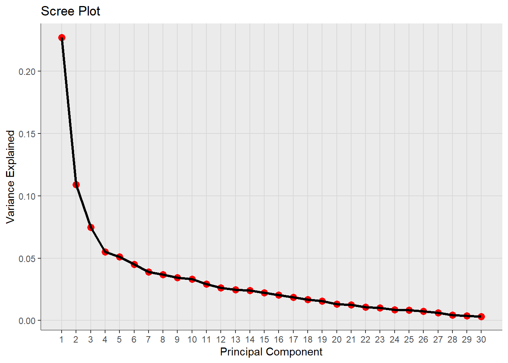
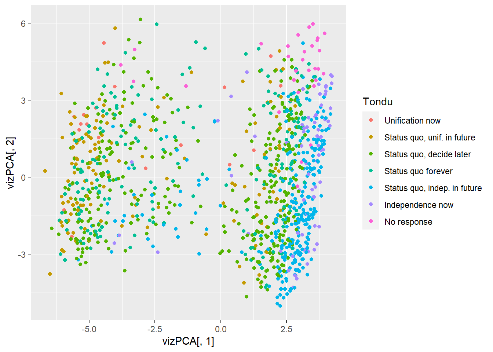

Preparing the Data for Principle Component Analysis
Using the TEDS2016 dataset, we explore groupings of the data through unsupervised learning. By this, we are refering to a kind of initial discovery phase without a specified hypothesis or output/inputs. We focus on two common methods of machine learning: Principal Component Analysis (PCA) and clustering. Remember the TEDS2016 data has 54 variables and 1690 observations. Starting with PCA, this method is most useful when there are numerous continuous metrics to sift through and we want to identify just the top most influential with the least collinearity. PCA is known for identifying or improving dimensional quality to model.
First, let’s remove the variables that cannot be used in this technique. Below we remove the elements with a variance of 0 since it cannot be rescaled for the purposes of this method. We also remove all cases with missing values using the dplyr package, leaving us with 1074 cases.
library(dplyr)
Attaching package: 'dplyr'
The following objects are masked from 'package:stats':
filter, lag
The following objects are masked from 'package:base':
intersect, setdiff, setequal, union
District Sex Age Edu Arear
7.035536e+06 2.499627e-01 2.062108e+00 2.400302e+00 2.428402e+00
Career Career8 Ethnic Party PartyID
2.058024e+00 3.928602e+00 2.263065e+00 9.854263e+01 1.259662e+01
Tondu Tondu3 nI2 votetsai green
3.149143e+00 3.476086e+00 2.094235e+03 NA 2.352812e-01
votetsai_nm votetsai_all Independence Unification sq
NA NA 2.054982e-01 1.075462e-01 2.498534e-01
Taiwanese edu female whitecollar lowincome
2.339538e-01 NA 2.499627e-01 2.487575e-01 6.800666e-01
income income_nm age KMT DPP
7.491683e+00 NA 2.826286e+02 1.769809e-01 2.275458e-01
npp noparty pfp South north
2.481108e-02 2.336511e-01 1.858738e-02 2.501196e-01 2.497430e-01
Minnan_father Mainland_father Econ_worse Inequality inequality5
2.006190e-01 9.194229e-02 2.471828e-01 6.037290e-02 5.307591e-01
econworse5 Govt_for_public pubwelf5 Govt_dont_care highincome
6.011081e-01 2.444975e-01 1.371462e+00 2.501466e-01 NA
votekmt votekmt_nm Blue Green No_Party
1.632635e-01 NA 0.000000e+00 0.000000e+00 0.000000e+00
voteblue voteblue_nm votedpp_1 votekmt_1
2.011445e-01 NA NA NA
The results show 51 significant variance proportions. This is somewhat more specified than the 54 variable data set. The weighted sum of PC1 explains .23 of the variance in 54 variables. At PC30, we reach .99 cumulative proportion, drastically clarifying potential redundancies from the data set. This is also visualized below.
library(ggplot2)
Warning: package 'ggplot2' was built under R version 4.2.2
Warning: Using `size` aesthetic for lines was deprecated in ggplot2 3.4.0.
ℹ Please use `linewidth` instead.

Visualizing Principal Components
Visualization formats should be chosen based on what elements of the data that have proven most relevant. Below we show two visualization examples, one macro and one micro. First, we wish to show how variables from the original data can be projected onto components discovered. We can use this visualization to potentially identify new potential variables and vet existing ones. Below we chose to project the variable Tondu onto PC1 and PC2 , which will represent the axes. Remember, Tondu is a factor with 7 level survey responses providing attitudes on towards Taiwan’s potential to reunify with China. By, projecting the original data onto the new eigenvector data, to see if we can discover a sense of what PC1 and PC2 could be correlated with in Tondu.
vizPCA <-as.data.frame(PCA$x) #Transformed Eigenvalues vizPCA$Tondu <- PCATEDS$Tondu #Add Parent Data for TonduvizPCA$Tondu <-factor(vizPCA$Tondu, levels=c('1','2','3', '4', '5','6', '9'),labels=c('Unification now','Status quo, unif. in future','Status quo, decide later','Status quo forever', 'Status quo, indep. in future', 'Independence now','No response'))library(ggplot2)ggplot(vizPCA) +geom_point(aes(x=vizPCA[,1], y=vizPCA[,2], color=Tondu))

As you can see, there are some clear and some vague groupings here. Two major groupings stand out and depict a bi-modal distribution. Interestingly, you can see how some special combination of PC1 and PC2 at -5 standard deviations contains one of two groupings. This group contains most of the responses in support of Status Quo, Unification in Future while the other grouping at standard deviation 2.5 contains most of the responses for Status Quo, Independence in Future. We can deduce that PC1 and PC2 offer some insight that may significantly contribute to how Taiwanese voters find themselves in one of these two schools of thought. These two major groupings are relatively distinct in the graph and supports the theory that these two stances are diametrically opposed. The same can be said for Unification Now and Independence Now which are both exponentially smaller in frequency than their previously mentioned counterparts. Status Quo, Decide Later is distributed throughout both groups and take up the most space in between groups which indicates it’s versatility as a preference. Perhaps, Status Quo, Decide Later is less useful in making distinctions than others will be.
What is most interesting is Status Quo, Forever. The frequency of Status Quo Forever is more closely tied with varying stances in support of Unification (-5 SD grouping), while its opposing group has significantly fewer instances. This is our clue that perhaps projecting Chinese or Taiwanese heritage onto PCA data might reveal or confirm correlations for weaker/stronger ties with China. It behooves us to try a few different visualizations. Some like to start with a macro visualization with as many inputs as possible, others like to start with micro visualizations. It just depends on how your own mental faculties are best assisted. Below, we use the not go into macro visualization where all original variables are projected visually with all principal components as recoding the inputs into factor levels would be too tedious here. We will leave it for another day!